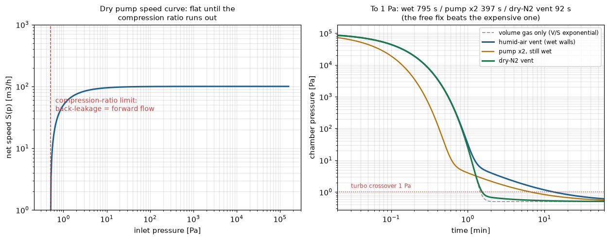
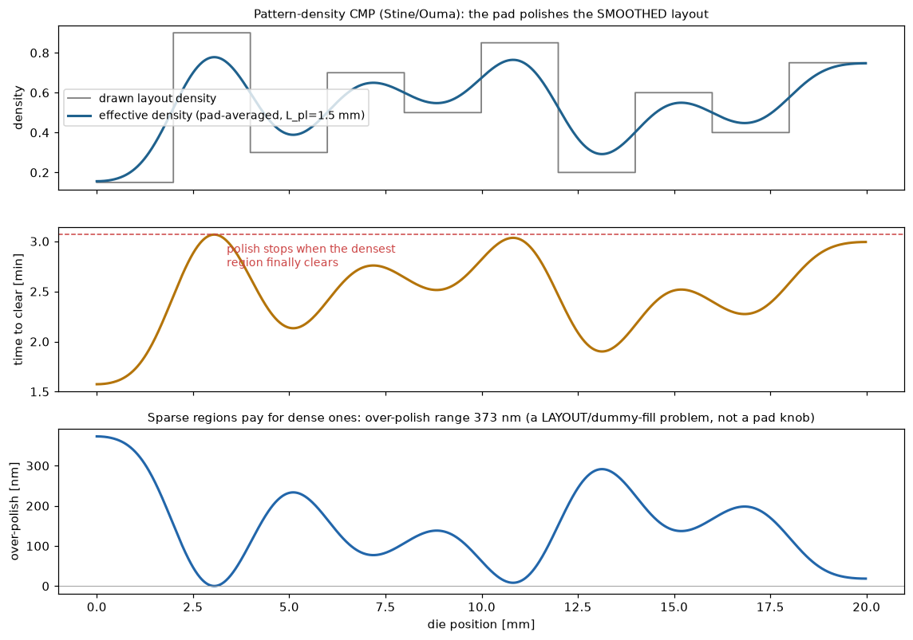

半導体装置を裏で支える2つの機械——ドライ真空ポンプとCMP装置——の設計判断を、気体収支ODEとパターン密度モデルで数値化。「ポンプを2倍にするより無料のN2ベントが効く」「平坦性はパッドではなくレイアウトで決まる」という装置エンジニアの経験則を、式と閉ループ検証で再現する。CMPユニットプロセス（Preston・R2R制御・ディッシング・EPD）はC++実装済み（加工ダッシュボード）で、本ページはその上流＝ダイスケール予測を足す。
多段ルーツ式ドライポンプの正味排気速度は S(p)=S₀(1−p_ult/p)：段間圧縮比が尽きる圧力で逆流＝順流となり速度が崩落する（左）。チャンバは気体収支 V·dp/dt=−S(p)p+Q(t) に従い、初期は教科書どおりの指数排気（解析解 V/S·ln(p₀/p) と0.6%一致）、その後は壁が吸着した水の1/t放出（アウトガス）床に張り付く。ロードロック設計の核心：1Pa（ターボ引継ぎ）到達は湿式大気ベントで795s、ポンプを2倍にしても397s、ドライN2ベントなら92s——高い方の対策より、無料の対策が8.6×効く。積分はS(p)·p=S₀(p−p_ult)の厳密線形性を使った無条件安定の指数更新。

酸化膜CMP初期はパッドが凸部だけに乗るため、局所レートは R/ρ_eff。ただしパッドはmm単位でしか曲がらないので、効くのは描画密度ではなく平坦化長L_pl（〜1.5mm）でガウシアン平均した有効密度（Stine/Ouma、MITモデル）。段差はρ_eff·h/Rで閉じ、以後ブランケットレート——つまりクリア時間マップ＝有効密度マップ（比例、テストで2%）。帰結：最密ブロックが抜けるまで磨くと疎な領域は373nm余計に削れる。この幅は密度コントラスト×段差で決まる＝ダミーフィル（レイアウト）の問題であって、パッドやスラリーのノブでは消えない。L_plを0.5→3mmに振ると450→242nm：パッド剛性が上がるほどレイアウトは救われる。

関連（実装済み）：CMPユニットプロセス（C++）（Preston除去・R2R時間制御・ディッシング/エロージョン・摩擦EPD）・エッチ/ALD（真空プロセス側）・洗浄（ウェット側）。出所：ebara/cmp_pattern.py。